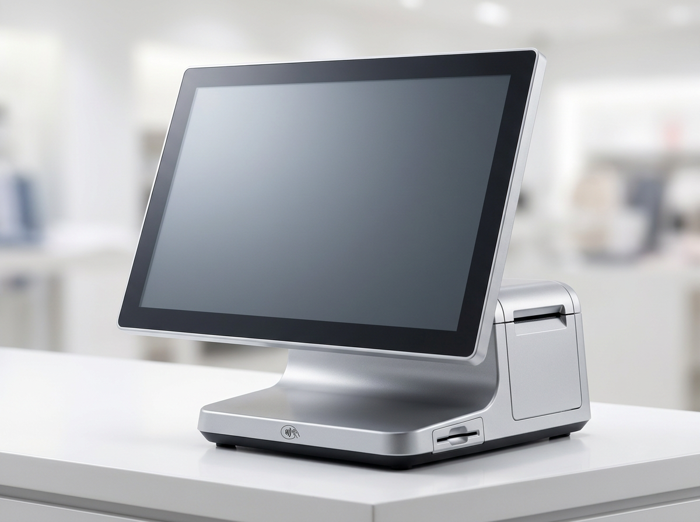

현금영수증·세금계산서, 언제 어떻게 발행할까 — 자영업 사장님 기본 정리
결론부터 말씀드립니다. 현금 매출이 발생하면 현금영수증을, 사업자 간 거래에서는 세금계산서를 발행하는 것이 원칙입니다. 두 서류는 이름은 비슷해도 발행 대상과 목적이 다릅니다. 현금영수증은 주로 최종 소비자(개인)에게 현금을 받았을 때, 세금계산서는 사업자끼리 물건이나 서비스를 사고팔 때 주고받는 증빙입니다. 매장을 운영하시는 사장님이라면 이 둘의 차이만 정확히 알아도 세무 실수를 크게 줄일 수 있습니다.
먼저 한 가지 분명히 짚고 넘어가겠습니다. 저희 누리네트웍스는 결제·포스(POS) 전문 기업이며, 세무 신고를 대행하지 않습니다. 실제 세무 신고와 정확한 판단은 세무사와 국세청의 영역입니다. 저희는 사장님이 매출과 현금영수증을 편하게 관리하고 발행할 수 있도록 포스 장비와 시스템으로 돕는 역할을 합니다. 아래 내용은 개념을 이해하시는 데 도움을 드리기 위한 것이며, 구체적인 기준·금액·대상 업종은 반드시 국세청 홈택스(hometax.go.kr) 또는 관할 세무서에서 확인하시기 바랍니다.
현금영수증, 의무발행과 자진발급의 차이
현금영수증은 크게 두 가지 상황으로 나눠 생각하면 이해가 쉽습니다.
첫째, 자진발급입니다. 손님이 현금으로 결제한 뒤 "현금영수증 해주세요"라고 요청하면 발행해 드리는 경우입니다. 휴대전화 번호나 현금영수증 카드로 발급합니다.
둘째, 의무발행입니다. 특정 업종은 손님이 요청하지 않아도 일정 금액 이상 현금 거래 시 반드시 현금영수증을 발행해야 하는 대상으로 지정되어 있습니다. 손님이 번호를 주지 않으면 국세청이 지정한 자진발급용 번호로 발행하는 방식이 안내되어 있습니다.
여기서 중요한 점은, 의무발행 대상 업종인지, 기준 금액이 얼마인지는 업종과 시기에 따라 다르고 계속 바뀐다는 것입니다. 내 업종이 의무발행 대상인지, 기준 금액이 얼마인지는 국세청 홈택스나 관할 세무서에서 반드시 확인하셔야 합니다. 이 부분을 정확히 확인해 두는 것이 미발행으로 인한 불이익을 막는 첫걸음입니다.

세금계산서 vs 현금영수증, 무엇이 다를까
두 서류를 표로 비교하면 차이가 한눈에 들어옵니다.
| 구분 | 현금영수증 | 세금계산서 |
|---|---|---|
| 주로 누구에게 | 최종 소비자(개인) | 사업자(거래처) |
| 언제 | 현금 결제를 받았을 때 | 사업자 간 재화·용역 거래 시 |
| 목적 | 소비자 소득공제·매출 투명화 | 매입·매출 증빙, 부가세 정산 |
| 발행 수단 | 포스·홈택스·현금영수증 단말 | 홈택스 전자세금계산서 등 |
| 대표 상황 | 매장에서 개인 손님 현금 결제 | 도매처에 납품·거래처 정산 |
정리하면, 개인 손님에게 현금을 받으면 현금영수증, 사업자 거래처와 거래하면 세금계산서가 기본 방향입니다. 물론 카드 결제는 그 자체로 매출 증빙이 되므로 별도 현금영수증을 발행하지 않는 등 상황별 예외가 있습니다. 헷갈리는 개별 사례는 세무사나 국세청에 문의하시는 것이 정확합니다.
어떻게 발행할까 — 홈택스와 포스 연동
발행 방법은 생각보다 간단합니다.
- 홈택스 직접 발행: 국세청 홈택스(hometax.go.kr)에 사업자로 로그인하면 현금영수증 발급, 전자세금계산서 발행을 직접 할 수 있습니다.
- 포스(POS) 연동 발행: 매장에서 가장 편한 방법입니다. 포스에서 결제와 동시에 현금영수증을 발행하면, 매출 데이터와 발행 내역이 함께 기록됩니다. 바쁜 매장에서 손님을 기다리게 하지 않고 즉시 처리할 수 있습니다.
바로 이 지점에서 포스의 역할이 중요합니다. 결제와 현금영수증 발행이 한 번에 처리되고, 하루·한 달 매출이 자동으로 집계되면 나중에 세무 자료를 준비할 때 훨씬 수월합니다. 저희 누리네트웍스는 업력 14년, 3만여 매장 운영 경험을 바탕으로 수도권 매장에 자사 인력이 직접 설치·관리해 드리고 있습니다. 세무 신고는 세무사와 국세청의 몫이지만, 그 신고가 편해지도록 매출과 발행 내역을 깔끔하게 남기는 것은 포스가 도와드릴 수 있는 부분입니다.
미발행 시 불이익, 개념만 알아두기
현금영수증 의무발행 대상인데 발행하지 않으면 가산세 등 불이익이 따를 수 있습니다. 다만 구체적인 가산세율이나 부과 기준은 업종·시기·상황에 따라 달라지므로 이 글에서 단정해 말씀드리지 않습니다. 정확한 내용은 반드시 국세청 홈택스 또는 관할 세무서에서 확인하시기 바랍니다.
핵심은 "내 업종이 의무발행 대상인지"를 먼저 확인하고, 대상이라면 현금 매출을 빠짐없이 발행하는 습관을 들이는 것입니다. 포스로 발행을 자동화해 두면 실수로 누락하는 일을 줄이는 데 도움이 됩니다.
자주 묻는 질문 (FAQ)
Q. 손님이 현금영수증을 원하지 않으면 안 해도 되나요?
자진발급 상황이라면 요청이 없을 때 발행하지 않을 수 있지만, 의무발행 대상 업종은 손님이 원하지 않아도 발행해야 하는 경우가 있습니다. 내 업종이 어디에 해당하는지는 국세청 홈택스나 관할 세무서에서 꼭 확인하세요.
Q. 카드로 결제하면 현금영수증도 따로 발행해야 하나요?
카드 결제는 그 자체로 매출이 기록되어 별도 현금영수증을 발행하지 않는 것이 일반적입니다. 다만 상황별 예외가 있으니 애매하면 세무사나 국세청에 확인하시는 것이 정확합니다.
Q. 누리네트웍스가 세무 신고도 대신 해주나요?
아닙니다. 저희는 결제·포스 전문 기업으로 세무 대행은 하지 않습니다. 세무 신고는 세무사와 국세청의 영역이고, 저희는 포스로 매출·현금영수증 발행이 편해지도록 돕는 역할만 합니다.
Q. 포스를 바꾸면 현금영수증 발행이 정말 편해지나요?
결제와 발행이 한 번에 처리되고 매출이 자동 집계되므로 관리가 수월해집니다. 매장 환경에 맞는 방식은 상담 시 안내해 드립니다.
정리하며
현금영수증은 개인 손님 현금 결제, 세금계산서는 사업자 간 거래. 이 큰 줄기만 잡아도 절반은 정리됩니다. 나머지 구체적인 기준·금액·의무 대상은 국세청 홈택스(hometax.go.kr)와 관할 세무서에서 확인하시고, 매장에서의 발행과 매출 관리는 포스로 편하게 처리하세요.
포스 도입이나 교체가 고민이시라면 부담 없이 문의 주세요. 수도권 자사 직접 설치, 200곳 이상 레퍼런스, 거품 뺀 직접 공급가로 상담해 드립니다.
- 📞 전화상담 1544-7754
- 🌐 홈페이지 nwpos.co.kr